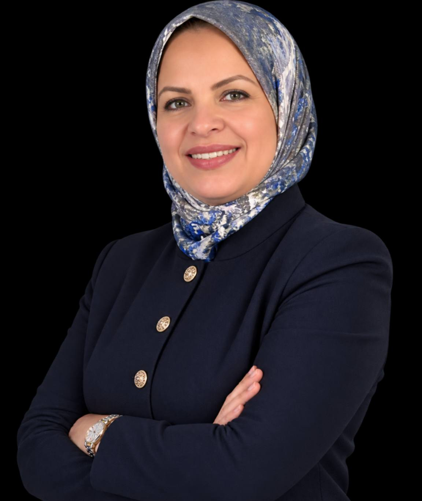

التواصل كطريق نحو القيادة
وُلدت LeadersWayPro من قناعة: لا يصبح المرء قائدًا بحكم لقبه، بل بالطريقة التي بها يُسمَع، يُفهَم، ويُتبَع.

إلهام الزابي
مدربة ومكوّنة في التواصل والقيادة، ترافق إلهام منذ أكثر من عشر سنوات القادة والمديرين ورواد الأعمال لتحويل حديثهم إلى رافعة حقيقية للتأثير.
بعد سنوات من ملاحظة أن الكفاءة التقنية وحدها لا تكفي أبدًا لكسب انخراط فريق أو إقناع مجلس إدارة، بنت إلهام منهجية عملية، تقوم على ثلاث ركائز: وضوح الرسالة، الحضور في الوضعية والصوت، والتأثير في بناء الحجج. منهجية مصممة لمحترفين مشغولين، بحاجة إلى نتائج ملموسة، لا إلى نظريات مجردة.
أسست LeadersWayPro لجعل هذه المرافقة في متناول الجميع عبر مسار متكامل: تكوين مجاني لاكتشاف المنهجية، برنامج رئيسي لإتقانها بعمق، وتدريب فردي للتحديات الأكثر تحديدًا.
جعل القيادة مسموعة
الكثير من الأفكار القوية تبقى غير مسموعة لأنها لم تُحمَل جيدًا. رسالتنا هي منح القادة والمديرين ورواد الأعمال الأدوات الملموسة ليصبح صوت كفاءتهم بقوة وجودها الفعلي.
جيل جديد من القادة
نريد أن نرى جيلاً من القادة يتواصلون بوضوح وهدوء وصدق — قادرين على توحيد فرقهم وحمل رؤيتهم، دون الحاجة إلى فرض الاحترام أو السلطة.
ما يوجّه كل تكوين
صرامة ودودة
ملاحظات صادقة، تُقدَّم دائمًا باحترام وبهدف التطور.
الواقعية
أدوات مُختبرة ميدانيًا، قابلة للتطبيق فور انتهاء التكوين.
التخصيص
يتكيف كل مسار مع السياق والقطاع وشخصية كل مشارك.
الترسيخ الدائم
متابعة بعد التكوين لتحويل التعلم إلى سلوك تلقائي.
هل تريد التحدث مباشرة مع إلهام؟
احجز مكالمة مدتها 45 دقيقة لمناقشة سياقك وأهدافك.